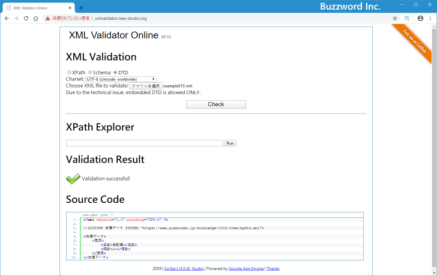
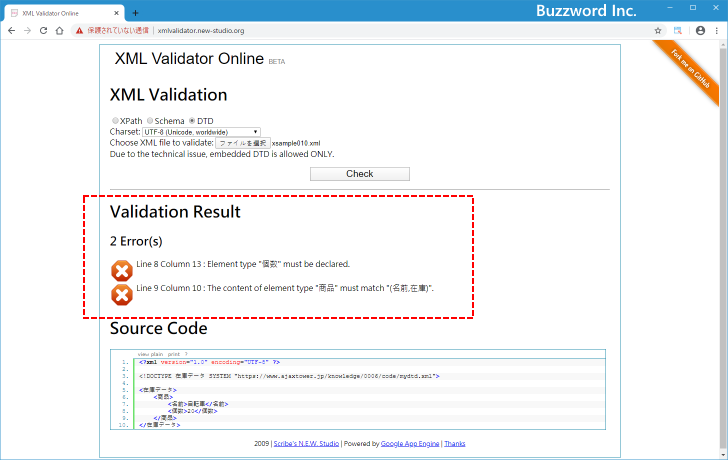

- Home ›
- XML入門 ›
- DTDによるXML構造の定義
DTDを別のファイルに分ける
DTD が単一のファイルでのみ使われる場合は DTD を対象の XML 文書の中に直接記述してもいいのですが、複数の XML 文書で同じ DTD を使用したい場合には DTD だけを別のファイルに分けて記述しておき複数の XML ファイルから同じ DTD のファイルを読み込んで使用するようにすると便利です。ここでは DTD を別のファイルに分ける方法について解説します。
DTDを別のファイルに分ける
次のような XML 文書を例に考えてみます。
<?xml version="1.0" encoding="UTF-8" ?>
<!DOCTYPE 在庫データ[
<!ELEMENT 在庫データ (商品+)>
<!ELEMENT 商品 (名前, 個数)>
<!ELEMENT 名前 (#PCDATA)>
<!ELEMENT 個数 (#PCDATA)>
]>
<在庫データ>
<商品>
<名前>自転車</名前>
<個数>20</個数>
</商品>
</在庫データ>
共通して利用する DTD 部分を次のように別の XML ファイルに保存します。ファイル名は "mydtd.xml" としました。
<?xml version="1.0" encoding="UTF-8" ?> <!ELEMENT 在庫データ (商品+)> <!ELEMENT 商品 (名前, 個数)> <!ELEMENT 名前 (#PCDATA)> <!ELEMENT 個数 (#PCDATA)>
次に XML 文書から外部のファイルに分けた DTD を読み込みます。外部ファイルに分けた DTD を使用する場合、文書型宣言は次のような書式となります。
<!DOCTYPE ルート要素名 SYSTEM "DTDファイルのURI">
先ほどの XML 文書を外部のファイルに分けた DTD を読み込むように変更します。
<?xml version="1.0" encoding="UTF-8" ?>
<!DOCTYPE 在庫データ SYSTEM "mydtd.xml">
<在庫データ>
<商品>
<名前>自転車</名前>
<個数>20</個数>
</商品>
</在庫データ>
それでは変更した XML 文書を XML Validator でチェックしてみると妥当な XML 文書と表示されました。

確認のために DTD が記述されている XML ファイルで「個数」となっていた部分を「在庫」に変更してエラーがでるようにしてみます。
<?xml version="1.0" encoding="UTF-8" ?> <!ELEMENT 在庫データ (商品+)> <!ELEMENT 商品 (名前, 在庫)> <!ELEMENT 名前 (#PCDATA)> <!ELEMENT 在庫 (#PCDATA)>
その後で改めて XML 文書を XML Validator でチェックしてみると次のようにエラーが表示されました。

外部ファイルに記述した DTD が XML 文書の方で読み込まれていることが確認できました。
-- --
DTD を別のファイルに分ける方法について解説しました。
( Written by Tatsuo Ikura )

著者 / TATSUO IKURA
初心者～中級者の方を対象としたプログラミング方法や開発環境の構築の解説を行うサイトの運営を行っています。